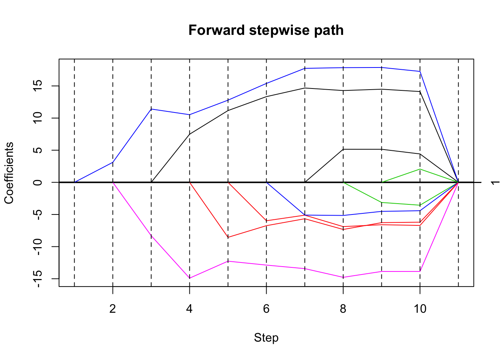
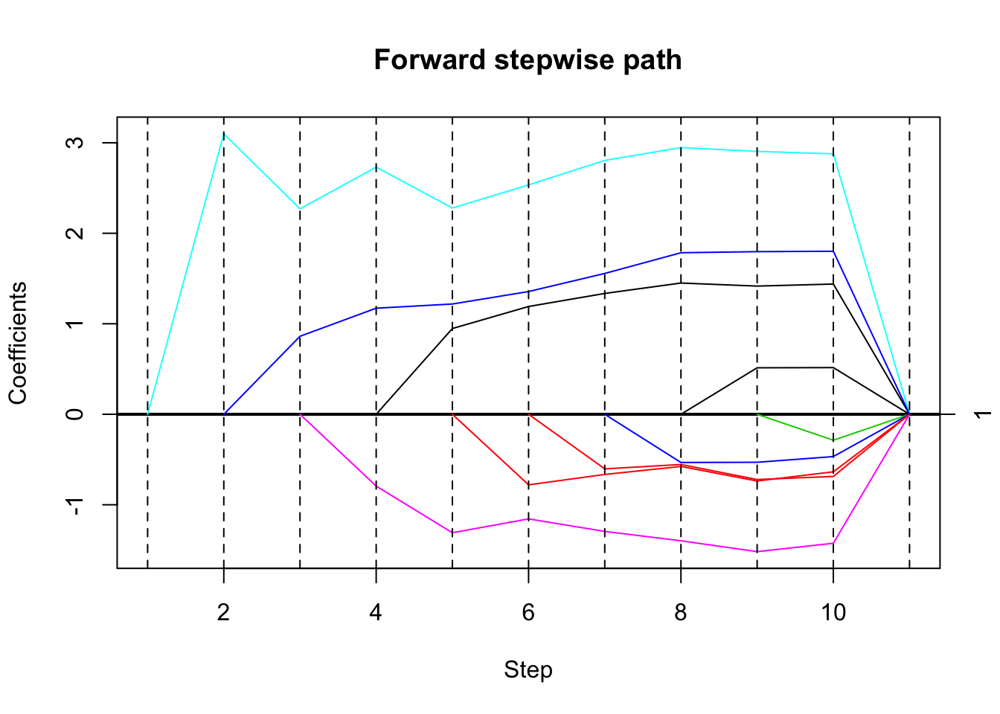
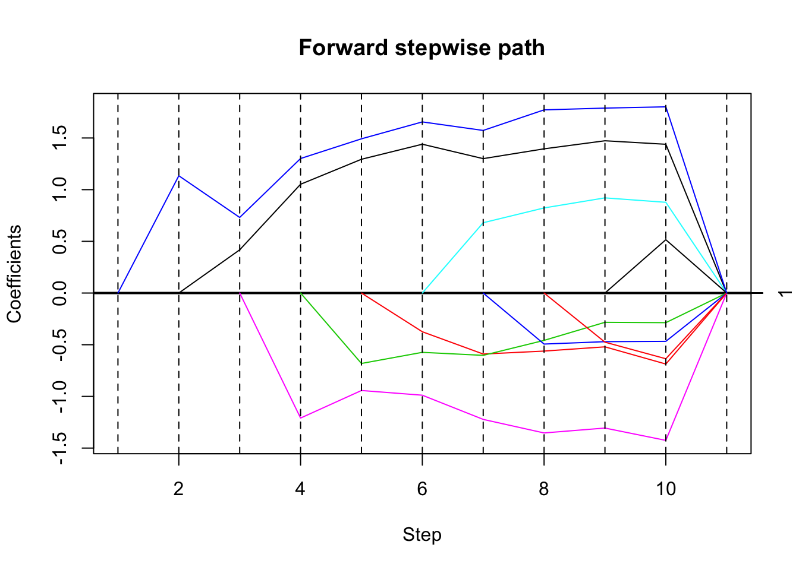
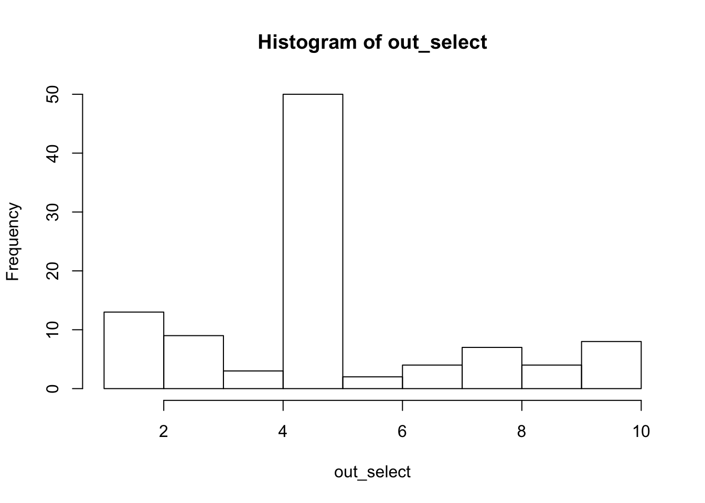
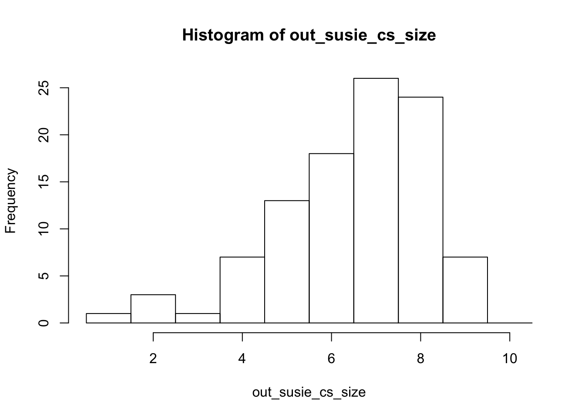

Last updated: 2019-04-19
Checks: 6 0
Knit directory: misc/analysis/
This reproducible R Markdown analysis was created with workflowr (version 1.2.0). The Report tab describes the reproducibility checks that were applied when the results were created. The Past versions tab lists the development history.
Great! Since the R Markdown file has been committed to the Git repository, you know the exact version of the code that produced these results.
Great job! The global environment was empty. Objects defined in the global environment can affect the analysis in your R Markdown file in unknown ways. For reproduciblity it’s best to always run the code in an empty environment.
The command set.seed(12345) was run prior to running the code in the R Markdown file. Setting a seed ensures that any results that rely on randomness, e.g. subsampling or permutations, are reproducible.
Great job! Recording the operating system, R version, and package versions is critical for reproducibility.
Nice! There were no cached chunks for this analysis, so you can be confident that you successfully produced the results during this run.
Great! You are using Git for version control. Tracking code development and connecting the code version to the results is critical for reproducibility. The version displayed above was the version of the Git repository at the time these results were generated.
Note that you need to be careful to ensure that all relevant files for the analysis have been committed to Git prior to generating the results (you can use wflow_publish or wflow_git_commit). workflowr only checks the R Markdown file, but you know if there are other scripts or data files that it depends on. Below is the status of the Git repository when the results were generated:
Ignored files:
Ignored: .DS_Store
Ignored: .Rhistory
Ignored: .Rproj.user/
Ignored: analysis/.RData
Ignored: analysis/.Rhistory
Ignored: analysis/ALStruct_cache/
Ignored: data/.Rhistory
Ignored: docs/figure/.DS_Store
Untracked files:
Untracked: .dropbox
Untracked: Icon
Untracked: _workflowr.yml
Untracked: analysis/GTEX-cogaps.Rmd
Untracked: analysis/SPCAvRP.rmd
Untracked: analysis/cormotif.Rmd
Untracked: analysis/eQTL.perm.rand.pdf
Untracked: analysis/flash_test_tree.Rmd
Untracked: analysis/ieQTL.perm.rand.pdf
Untracked: analysis/m6amash.Rmd
Untracked: analysis/mash_bhat_z.Rmd
Untracked: analysis/mash_ieqtl_permutations.Rmd
Untracked: analysis/mixsqp.Rmd
Untracked: analysis/normalize.Rmd
Untracked: analysis/pseudodata.Rmd
Untracked: analysis/sc_bimodal.Rmd
Untracked: analysis/susie_z_investigate.Rmd
Untracked: analysis/svd-timing.Rmd
Untracked: analysis/test_sparse.Rmd
Untracked: analysis/z.txt
Untracked: code/multivariate_testfuncs.R
Untracked: data/4matthew/
Untracked: data/4matthew2/
Untracked: data/E-MTAB-2805.processed.1/
Untracked: data/ENSG00000156738.Sim_Y2.RDS
Untracked: data/GDS5363_full.soft.gz
Untracked: data/GSE41265_allGenesTPM.txt
Untracked: data/Muscle_Skeletal.ACTN3.pm1Mb.RDS
Untracked: data/Thyroid.FMO2.pm1Mb.RDS
Untracked: data/bmass.HaemgenRBC2016.MAF01.Vs2.MergedDataSources.200kRanSubset.ChrBPMAFMarkerZScores.vs1.txt.gz
Untracked: data/bmass.HaemgenRBC2016.Vs2.NewSNPs.ZScores.hclust.vs1.txt
Untracked: data/bmass.HaemgenRBC2016.Vs2.PreviousSNPs.ZScores.hclust.vs1.txt
Untracked: data/finemap_data/fmo2.sim/b.txt
Untracked: data/finemap_data/fmo2.sim/dap_out.txt
Untracked: data/finemap_data/fmo2.sim/dap_out2.txt
Untracked: data/finemap_data/fmo2.sim/dap_out2_snp.txt
Untracked: data/finemap_data/fmo2.sim/dap_out_snp.txt
Untracked: data/finemap_data/fmo2.sim/data
Untracked: data/finemap_data/fmo2.sim/fmo2.sim.config
Untracked: data/finemap_data/fmo2.sim/fmo2.sim.k
Untracked: data/finemap_data/fmo2.sim/fmo2.sim.k4.config
Untracked: data/finemap_data/fmo2.sim/fmo2.sim.k4.snp
Untracked: data/finemap_data/fmo2.sim/fmo2.sim.ld
Untracked: data/finemap_data/fmo2.sim/fmo2.sim.snp
Untracked: data/finemap_data/fmo2.sim/fmo2.sim.z
Untracked: data/finemap_data/fmo2.sim/pos.txt
Untracked: data/logm.csv
Untracked: data/m.cd.RDS
Untracked: data/m.cdu.old.RDS
Untracked: data/m.new.cd.RDS
Untracked: data/m.old.cd.RDS
Untracked: data/mainbib.bib.old
Untracked: data/mat.csv
Untracked: data/mat.txt
Untracked: data/mat_new.csv
Untracked: data/matrix_lik.rds
Untracked: data/paintor_data/
Untracked: data/temp.txt
Untracked: data/y.txt
Untracked: data/y_f.txt
Untracked: data/zscore_jointLCLs_m6AQTLs_susie_eQTLpruned.rds
Untracked: data/zscore_jointLCLs_random.rds
Untracked: docs/figure/eigen.Rmd/
Untracked: docs/figure/fmo2.sim.Rmd/
Untracked: docs/figure/newVB.elbo.Rmd/
Untracked: docs/figure/rbc_zscore_mash2.Rmd/
Untracked: docs/figure/rbc_zscore_mash2_analysis.Rmd/
Untracked: docs/figure/rbc_zscores.Rmd/
Untracked: docs/trend_files/
Untracked: docs/z.txt
Untracked: explore_udi.R
Untracked: output/fit.varbvs.RDS
Untracked: output/glmnet.fit.RDS
Untracked: output/test.bv.txt
Untracked: output/test.gamma.txt
Untracked: output/test.hyp.txt
Untracked: output/test.log.txt
Untracked: output/test.param.txt
Untracked: output/test2.bv.txt
Untracked: output/test2.gamma.txt
Untracked: output/test2.hyp.txt
Untracked: output/test2.log.txt
Untracked: output/test2.param.txt
Untracked: output/test3.bv.txt
Untracked: output/test3.gamma.txt
Untracked: output/test3.hyp.txt
Untracked: output/test3.log.txt
Untracked: output/test3.param.txt
Untracked: output/test4.bv.txt
Untracked: output/test4.gamma.txt
Untracked: output/test4.hyp.txt
Untracked: output/test4.log.txt
Untracked: output/test4.param.txt
Untracked: output/test5.bv.txt
Untracked: output/test5.gamma.txt
Untracked: output/test5.hyp.txt
Untracked: output/test5.log.txt
Untracked: output/test5.param.txt
Unstaged changes:
Modified: analysis/_site.yml
Deleted: analysis/chunks.R
Modified: analysis/eigen.Rmd
Modified: analysis/fmo2.sim.Rmd
Modified: analysis/newVB.Rmd
Modified: analysis/wSVD.Rmd
Note that any generated files, e.g. HTML, png, CSS, etc., are not included in this status report because it is ok for generated content to have uncommitted changes.
These are the previous versions of the R Markdown and HTML files. If you’ve configured a remote Git repository (see ?wflow_git_remote), click on the hyperlinks in the table below to view them.
| File | Version | Author | Date | Message |
|---|---|---|---|---|
| Rmd | d3b402a | Matthew Stephens | 2019-04-19 | workflowr::wflow_publish(“selective_inference.Rmd”) |
| html | 900273f | Matthew Stephens | 2019-04-19 | Build site. |
| Rmd | eb867f8 | Matthew Stephens | 2019-04-19 | wflow_publish(“selective_inference.Rmd”) |
The aim here is to illustrate selective inference with correlated predictors.
library("selectiveInference")Loading required package: glmnetLoading required package: MatrixLoading required package: foreachLoaded glmnet 2.0-16Loading required package: intervals
Attaching package: 'intervals'The following object is masked from 'package:Matrix':
expandLoading required package: survivalThis function simulates matrix x with highly columns, and then \(y=x\beta+e\) with \(\beta\) having one non-zero element (\(b\)).
simdata = function(n,p,b,signal_index,cor_sd,sigma=1){
z = rnorm(n)
x = matrix(rep(z,p),nrow=n) + matrix(rnorm(n*p,sd=cor_sd),nrow=n)
beta = rep(0,p)
beta[signal_index] = b
y = x %*% beta + sigma*rnorm(n)
return(list(y=y,x=x,beta=beta))
}Here the correlation is very high (\(>0.999\) on average). The true non-zero element is \(beta[5]=3\). Here the method selects the wrong variable. It was unexpected to me that the method considered the first (wrong) variable entered highly significant. I thought the presence of other highly correlated variables would mean that the estimate of that coefficient be highly uncertain. I guess that maybe the method is estimating the coefficient of the selected variable in a univariate regression, rather than the multiple regression coefficient?
set.seed(33)
dat= simdata(50,10,3,5,0.01,1)
mean(cor(dat$x))[1] 0.9998704# run forward stepwise, plot results
fsfit = fs(dat$x,dat$y)
plot(fsfit)
| Version | Author | Date |
|---|---|---|
| 900273f | Matthew Stephens | 2019-04-19 |
# compute sequential p-values and confidence intervals
# (sigma estimated from full model)
out = fsInf(fsfit)
print(out)
Call:
fsInf(obj = fsfit)
Standard deviation of noise (specified or estimated) sigma = 0.962
Sequential testing results with alpha = 0.100
Step Var Coef Z-score P-value LowConfPt UpConfPt LowTailArea UpTailArea
1 10 3.113 19.195 0.000 2.844 3.381 0.049 0.049
2 6 -8.301 -0.826 0.909 -9.130 418.832 0.050 0.050
3 1 7.490 0.704 0.963 -Inf -72.373 0.000 0.045
4 8 -8.556 -0.719 0.521 -Inf Inf 0.000 0.000
5 2 -5.977 -0.542 0.105 -Inf 615.374 0.000 0.050
6 4 -5.093 -0.432 0.072 -Inf 103.535 0.000 0.050
7 7 5.150 0.360 0.816 -Inf 387.692 0.000 0.050
8 3 -3.132 -0.227 0.788 -589.574 Inf 0.050 0.000
9 9 2.065 0.136 0.837 -Inf 263.414 0.000 0.050
10 5 1.719 0.112 0.942 -Inf 199.868 0.000 0.050
Estimated stopping point from ForwardStop rule = 1Here I try with a less extreme, but still high correlation (\(0.986\) average). Here it picks the right variable first.
set.seed(33)
dat= simdata(50,10,3,5,0.1,1)
mean(cor(dat$x))[1] 0.9869493# run forward stepwise, plot results
fsfit = fs(dat$x,dat$y)
plot(fsfit)
| Version | Author | Date |
|---|---|---|
| 900273f | Matthew Stephens | 2019-04-19 |
# compute sequential p-values and confidence intervals
# (sigma estimated from full model)
out = fsInf(fsfit)
print(out)
Call:
fsInf(obj = fsfit)
Standard deviation of noise (specified or estimated) sigma = 0.962
Sequential testing results with alpha = 0.100
Step Var Coef Z-score P-value LowConfPt UpConfPt LowTailArea UpTailArea
1 5 3.099 19.495 0.000 2.837 3.362 0.049 0.049
2 10 0.862 0.902 0.894 -Inf 5.609 0.000 0.050
3 6 -0.793 -0.607 0.737 -15.527 54.765 0.050 0.050
4 1 0.948 0.804 0.819 -101.155 14.770 0.050 0.050
5 8 -0.780 -0.631 0.739 -54.642 Inf 0.050 0.000
6 2 -0.603 -0.510 0.280 -Inf 114.566 0.000 0.050
7 4 -0.533 -0.441 0.226 -Inf 34.909 0.000 0.050
8 7 0.514 0.358 0.354 -27.841 54.030 0.050 0.050
9 3 -0.287 -0.207 0.208 -Inf 32.315 0.000 0.050
10 9 0.212 0.139 0.290 -50.990 143.626 0.050 0.050
Estimated stopping point from ForwardStop rule = 1Try reducing effect size to \(b=1\).
set.seed(33)
dat= simdata(50,10,1,5,0.1,1)
mean(cor(dat$x))[1] 0.9869493# run forward stepwise, plot results
fsfit = fs(dat$x,dat$y)
plot(fsfit)
| Version | Author | Date |
|---|---|---|
| 900273f | Matthew Stephens | 2019-04-19 |
# compute sequential p-values and confidence intervals
# (sigma estimated from full model)
out = fsInf(fsfit)
print(out)
Call:
fsInf(obj = fsfit)
Standard deviation of noise (specified or estimated) sigma = 0.962
Sequential testing results with alpha = 0.100
Step Var Coef Z-score P-value LowConfPt UpConfPt LowTailArea UpTailArea
1 10 1.135 6.967 0.000 0.813 1.404 0.049 0.049
2 1 0.418 0.532 0.550 -16.629 12.778 0.050 0.050
3 6 -1.210 -0.879 0.766 -10.567 48.569 0.050 0.050
4 3 -0.681 -0.571 0.338 -Inf 64.672 0.000 0.050
5 2 -0.375 -0.341 0.685 -80.765 Inf 0.050 0.000
6 5 0.680 0.467 0.398 -60.147 94.450 0.050 0.050
7 4 -0.494 -0.397 0.367 -Inf 118.456 0.000 0.050
8 8 -0.475 -0.348 0.136 -Inf 26.384 0.000 0.050
9 7 0.516 0.360 0.577 -Inf 121.478 0.000 0.050
10 9 0.212 0.139 0.923 -Inf 11.036 0.000 0.050
Estimated stopping point from ForwardStop rule = 1Try lower correlation (about 0.95), and repeat 10 times. Each time we store the first selected variable and the corresponding \(p\) value.
We also run susie. Note that it outputs large CSs (because the variables are correlated) and 96 out of 100 include the true effect variable.
set.seed(32)
n_iter = 100
out_select = rep(0,n_iter)
out_pv = rep(0,n_iter)
out_susie_cs_size =rep(0,n_iter) # size of first CS
out_susie_cs_inc = rep(0,n_iter) # whether CS includes true effect variable
out_susie_cs_num = rep(0,n_iter) # number of CSs reported (just to check not more than 1)
for(i in 1:n_iter){
dat= simdata(50,10,1,5,0.2,1)
mean(cor(dat$x))
# run forward stepwise, plot results
fsfit = fs(dat$x,dat$y)
# compute sequential p-values and confidence intervals
# (sigma estimated from full model)
out = fsInf(fsfit)
out_select[i] = out$vars[1]
out_pv[i] = out$pv[1]
s.fit = susieR::susie(dat$x,dat$y,estimate_prior_variance = TRUE)
s.cs = susieR::susie_get_cs(s.fit)$cs
out_susie_cs_num[i] = length(s.cs)
s.cs = s.cs[[1]]
out_susie_cs_size[i] = length(s.cs)
out_susie_cs_inc[i] = is.element(5,s.cs)
}
hist(out_select)
| Version | Author | Date |
|---|---|---|
| 900273f | Matthew Stephens | 2019-04-19 |
summary(out_pv) Min. 1st Qu. Median Mean 3rd Qu. Max.
0.0000000 0.0000000 0.0000000 0.0282402 0.0008448 0.9067797 mean(out_select[out_pv<0.05]==5)[1] 0.5164835hist(out_susie_cs_size,breaks=seq(0.5,10.5,length=11))
mean(out_susie_cs_inc)[1] 0.96mean(out_susie_cs_num)[1] 1
sessionInfo()R version 3.5.2 (2018-12-20)
Platform: x86_64-apple-darwin15.6.0 (64-bit)
Running under: macOS Mojave 10.14.1
Matrix products: default
BLAS: /Library/Frameworks/R.framework/Versions/3.5/Resources/lib/libRblas.0.dylib
LAPACK: /Library/Frameworks/R.framework/Versions/3.5/Resources/lib/libRlapack.dylib
locale:
[1] en_US.UTF-8/en_US.UTF-8/en_US.UTF-8/C/en_US.UTF-8/en_US.UTF-8
attached base packages:
[1] stats graphics grDevices utils datasets methods base
other attached packages:
[1] selectiveInference_1.2.4 survival_2.43-3
[3] intervals_0.15.1 glmnet_2.0-16
[5] foreach_1.4.4 Matrix_1.2-15
loaded via a namespace (and not attached):
[1] Rcpp_1.0.0 knitr_1.21 whisker_0.3-2
[4] magrittr_1.5 workflowr_1.2.0 splines_3.5.2
[7] lattice_0.20-38 susieR_0.7.1.0487 stringr_1.3.1
[10] tools_3.5.2 grid_3.5.2 xfun_0.4
[13] git2r_0.24.0 matrixStats_0.54.0 htmltools_0.3.6
[16] iterators_1.0.10 yaml_2.2.0 rprojroot_1.3-2
[19] digest_0.6.18 fs_1.2.6 codetools_0.2-15
[22] glue_1.3.0 evaluate_0.12 rmarkdown_1.11
[25] stringi_1.2.4 compiler_3.5.2 backports_1.1.3